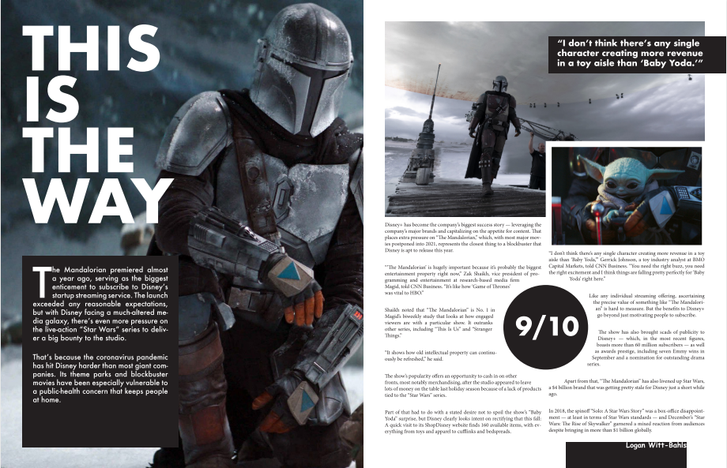
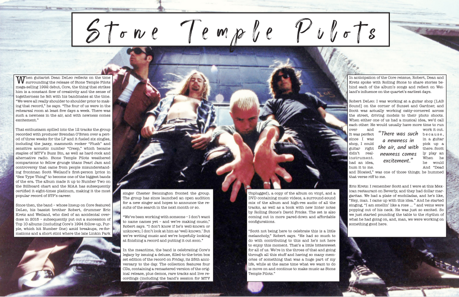

InDesign Unit
Adobe InDesign is a desktop publishing and page layout designing software application produced by Adobe Inc. Like most software covered in Digital Media, InDesign has a fairly wide range of applications. It can be used to create all sorts of text-based documents, including posters, magazines, and newsletters. InDesign is the best friend of anyone seeking to create printable advertisements or PSAs. Perhaps InDesign's most useful feature is its ability to link Photoshop and Illustrator files directly into the document, allowing users to achieve things that would otherwise be impossible with InDesign alone.
An early recreate assignment. Subtly introduced and reinforced many of the important techniques used throughout the unit, like word wrap and pull quotes.
My original magazine spread. The final product ended up looking a bit on the rough side. In hindsight, I might've been better off recreating an existing spread instead of trying to come up with something.